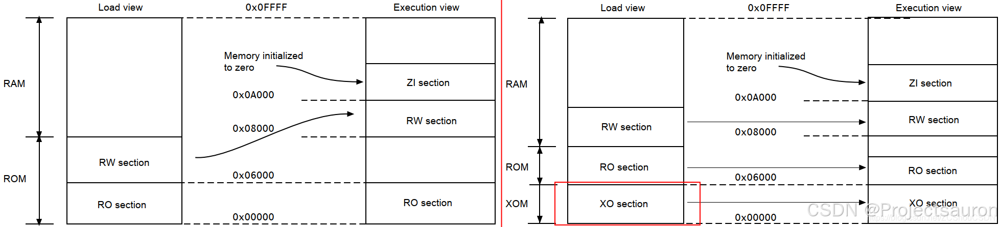
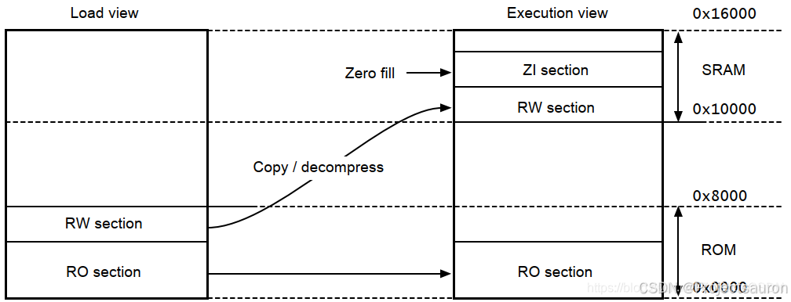
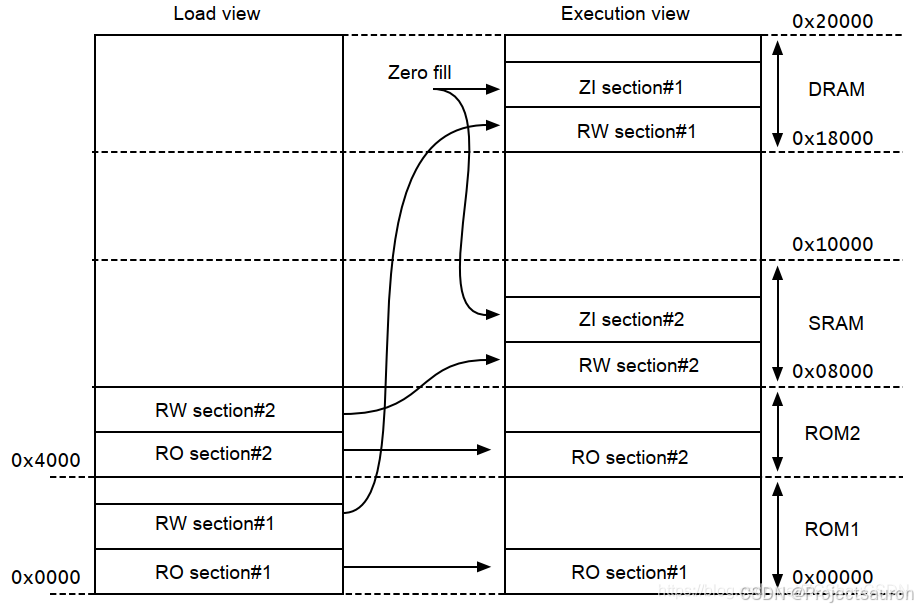

分散加载文件 scatter files
@toc
本文主要是对 浅析 Keil 中的 sct 文件 一文做进一步的补充和说明。
一、加载域和执行域
镜像的各个域在加载时是被放置在系统存储器中的。 在执行镜像之前，可能必须将一些域移动到它们的执行地址，并创建 ZI 输出节。例如，初始化的 RW 数据可能必须从 ROM 中的加载地址复制到 RAM 中的执行地址。为了可以灵活的处理这种情况，ARM 定义了如下两个视图：

Load view： 根据镜像在加载到内存中时所位于的地址（镜像执行开始前的位置），描述每个镜像域和节。Execution view： 根据镜像执行过程中所位于的地址，描述每个镜像域和节。
下面是两种视图的对比：
| Load | Description | Execution | Description |
|---|---|---|---|
| 加载地址 | 在包含分节或域的镜像开始执行之前，要加载到内存中的节或者域的地址。 节或者非根域的加载地址和他们执行地址可以不同 |
执行地址 | 当包含某个节或域的镜像被执行时，该节或域所在的地址 |
| 加载域 | 加载域描述在加载地址空间中连续内存块的布局 | 执行域 | 执行域描述在执行地址空间中的连续内存块的布局 |
二、Image entry points
镜像中入口点（Image entry points）就是镜像中的一个位置（地址），该位置（地址）会被加载到 PC 寄存器。 它是程序执行开始的位置。 虽然镜像中可以有多个入口点，但在链接时只能指定一个入口点。并非每个 ELF 文件都必须有入口点。 不允许在单个 ELF 文件中存在多个入口点。
对于嵌入式 Cortex-M 核的程序，程序的执行是从复位向量所在的位置（地址）开始执行。复位向量会被加载到 PC 寄存器中，且复位向量的位置（地址）并不固定。 通常，复位向量指向 Reset_Handler 函数。
有两种不同类型的入口点：
- 初始化入口点（Initial entry point）： 镜像的初始入口点是存储在 ELF 头文件中的单个值。 对于那些需要由操作系统或引导加载程序加载到 RAM 中的程序，加载程序通过将控制转移到镜像中的初始入口点来启动镜像执行。一个镜像只能有一个初始化入口点。初始入口点可以是 ENTRY 指令设置的入口点之一，但不是必需的。
- ENTRY 指令指定的入口点： ENTRY 指令可以为镜像从多个可能的入口点中选择其中一个。每个镜像只能有一个入口点。您可以在汇编程序文件中使用 ENTRY 指令在对象中创建入口点。 在嵌入式系统中，该指令的典型用途是标记进入处理器异常向量（例如 RESET，IRQ 和 FIQ）的代码。该指令使用 ENTRY 关键字标记输出代码部分，该关键字指示链接器在执行未使用的部分消除时不删除该部分。对于 C/C++ 程序，C 库中的
__main就是入口点。
如果加载程序要使用嵌入式的镜像，则它必须在标头中指定一个初始入口点。 使用 --entry 命令行选项选择入口点。
三、映射符号
映射符号由==编译器==和==汇编器==生成，以识别文字池边界处的代码和数据之间的内联转换，以及 ARM 代码和 Thumb 代码之间的内联转换。例如 ARM/Thumb 交互操作胶合代码。其必须由 armlink 的参数 --list_mapping_symbols 和 --no_list_mapping_symbols 分别来控制显示与不显示。在默认情况下为 `–no_list_mapping_symbols，即不显示这部分符号。映射符号有如下这些：
$a：一系列ARM指令的开始$t：一系列Thumb指令的开始$t.x：一系列ThumbEE指令的开始$d：一系列数据项的开始，如文字池
补充说明：
- 文字池：是代码段中存放常量数据的区域。因为没有一条指令可以生成一个 4 字节的常量，因此编译器将这些常量放到文字池中，然后生成从文字池加载这些常量的代码。
- ARM/Thumb交互（ARM/Thumb interworking）：是指对汇编语言和 C/C++ 语言的 ARM 和 Thumb 代码进行连接的方法，它进行两种状态（ARM 和 Thumb）间的切换。
- 胶合代码（Veneer）：在进行 ARM/Thumb 交互时，有时需使用额外的代码，这些代码被称为 胶合代码（Veneer）。
- AAPCS：定义了 ARM 和 Thumb 过程调用的标准。
此外， armlink 还会生成 $d.realdata 映射符号，以告诉 fromelf 该数据是来自非可执行节区。因此， fromelf -z 输出的代码和数据大小与 armlink --info sizes 的输出相同。
四、链接器预定义符号
当链接器创建镜像文件时，它会创建一些 ARM 预定义的与域或者节相关的符号。这些符号就代表了链接器创建创建镜像的依据。
链接器定义了一些 ARM 保留的符号，我们可以在需要时访问这些符号。 这些符号是包含 $$ 字符序列的符号以及所有其他包含 $$ 字符序列的外部名称。我们可以导入这些符号地址，并将它们作为汇编语言程序的可重定位地址使用，或者将它们作为 C 或 C++ 源代码中的 extern 符号来引用。
如果使用
--strict编译器命令行选项，则编译器不接受包含$的符号名称。要重新启用支持，请在编译器命令行中包含--dollar选项。
- 链接器定义的符号只有在代码引用它们时才会生成。
- 如果存在仅执行（XO）节，则链接器定义的符号受以下约束：
- 不能对没有 XO 节的域或者空域定义 XO 连接器定义符号
- 不能对仅包含 RO 节的域定义 XO 连接器定义符号
- 对于仅包含 XO 节的域，不能定义 RO 连接器定义符号
1、将符号引入到程序中
1.1 引入到 C/C++
可以通过 值引用 或 地址引用 这两种方式将链接器定义的符号导入到的 C 或 C++ 源代码中来供我们使用：
- 值引用：
extern unsigned int symbol_name; - 地址引用：
extern void *symbol_name;
注意，如果将符号声明为 int 类型的值引用，则必须使用寻址操作符（&）来获得正确的值，如下例所示：
1 | |
1.2 引入到汇编
可以使用指令 IMPORT 将连接器定义的符号引入到 ARM 汇编文件中来供我们使用：
1 | |
2、域相关的符号
链接器为镜像文件中的每个域生成不同类型的与域相关的符号，我们可以根据需要访问这些符号。域相关的符号主要有以下两种：
Image$$或者Load$$开头的符号，用于各==执行域==Load$$LR$$开头的符号，用于各==加载域==
如果未使用分散加载文件，则会以默认的 region 名称来生成域相关的符号。链接器默认的域名称如下：
ER_XO：用于仅执行属性的执行域（如果存在）。ER_RO：用于只读执行域。ER_RW：用于可读写执行域。ER_ZI：用于零初始化的执行域。
可以将这些名称插入 Image$$ 和 Load$$ 中以获取所需的地址，例如：Load$$ER_RO$$Base 就是只读域的基地址。
使用分散加载时，连接器将使用分散加载文件中的名称来生成各种域相关的符号。分散加载文件可以实现以下功能：
- 命名镜像中的所有执行域，并提供他们的加载和执行地址。
- 定义堆栈和堆。 链接器还会生成特殊的栈和堆符号。
注意一下几点：
- 镜像的 ZI 输出节不是静态创建的，而是在运行时自动动态创建的。 因此，ZI 输出节没有加载地址符号。
- 符号
Load$$region_name仅适用于执行域。Load$$LR$$load_region_name符号仅适用于加载域。
2.1 执行域符号 Image$$
链接器为镜像中存在的每个执行域生成符号 Image$$。下表列出了链接器为镜像中存在的每个执行域生成的符号。 初始化 C 库后，所有符号都指向执行地址。
| Symbol | Description |
|---|---|
Image$$region_name$$Base |
执行域的地址 |
Image$$region_name$$Length |
执行域长度（以字节为单位），不包括 ZI 的长度。 |
Image$$region_name$$Limit |
超出执行域中非 ZI 部分末尾的字节的地址 |
Image$$region_name$$RO$$Base |
域中的输出节 RO 的执行地址 |
Image$$region_name$$RO$$Length |
RO 段输出部分的长度（字节） |
Image$$region_name$$RO$$Limit |
执行域中 RO 输出部分末尾以外字节的地址 |
Image$$region_name$$RW$$Base |
该域中 RW 输出部分的执行地址 |
Image$$region_name$$RW$$Length |
RW 输出部分的长度（字节） |
Image$$region_name$$RW$$Limit |
执行域中 RW 输出部分末尾以外字节的地址 |
Image$$region_name$$XO$$Base |
该域内 XO 输出部分的执行地址 |
Image$$region_name$$XO$$Length |
XO 输出部分的长度（字节） |
Image$$region_name$$XO$$Limit |
执行域中 XO 输出部分末端以外字节的地址 |
Image$$region_name$$ZI$$Base |
该域 ZI 输出部分的执行地址 |
Image$$region_name$$ZI$$Length |
ZI 输出部分的长度（字节） |
Image$$region_name$$ZI$$Limit |
执行域中 ZI 输出部分末端以外字节的地址 |
2.2 执行域符号 Load$$
链接器为镜像中存在的每个执行域生成符号 Load$$ 。下表列出了链接器为镜像中存在的每个 Load$$ 执行域生成的符号。 初始化 C 库后，所有符号都指向加载地址。
| Symbol | Description |
|---|---|
Load$$region_name$$Base |
加载域地址 |
Load$$region_name$$Length |
该域长度（字节） |
Load$$region_name$$Limit |
执行域末端以外字节的地址 |
Load$$region_name$$RO$$Base |
该执行域中 RO 输出部分的地址 |
Load$$region_name$$RO$$Length |
RO 输出部分的长度（字节） |
Load$$region_name$$RO$$Limit |
执行域中 RO 输出部分末尾以外字节的地址 |
Load$$region_name$$RW$$Base |
该执行域中 RW 输出部分的地址 |
Load$$region_name$$RW$$Length |
RW 输出部分的长度（字节） |
Load$$region_name$$RW$$Limit |
执行域中 RW 输出部分末尾以外字节的地址 |
Load$$region_name$$XO$$Base |
该执行域中 XO 输出部分的地址 |
Load$$region_name$$XO$$Length |
XO 输出部分的长度（字节） |
Load$$region_name$$XO$$Limit |
执行域中 XO 输出部分末端以外字节的地址 |
Load$$region_name$$ZI$$Base |
该执行域中 ZI 输出部分的加载地址 |
Load$$region_name$$ZI$$Length |
ZI 输出部分的加载长度（字节）。 除非 region_name 具有 ZEROPAD 分散加载关键字，否则 ZI 的加载长度为零。 如果设置了 ZEROPAD 则: Load Length = Image$$region_name$$ZI$$Length |
Load$$region_name$$ZI$$Limit |
执行域 ZI 输出部分末端以外字节的加载地址 |
初始化 C 库之前，此表中的所有符号均指加载地址。请注意以下事项：
- 这些符号是绝对的，因为相对于节的符号只能有执行地址。
- 这些符号考虑了 RW 压缩。
- 从 RW 压缩执行域引用的链接器定义的符号必须是在应用 RW 压缩之前可解析的符号。
- 如果链接器检测到从 RW 压缩域到依赖于 RW 压缩的链接器定义符号的重定位，则链接器将禁用当前域的压缩。
- Limit 和 Length 值影响写入文件的任何零初始化数据。 使用
ZEROPAD分散加载关键字时，零初始化数据将写入文件。
2.3 加载域符号 Load$$LR$$
链接器为镜像中存在的每个加载区生成符号 Load$$LR$$ 。一个 Load$$LR$$ 加载域可以包含许多执行域，因此没有单独的 $$RO 和 $$RW 部分。下表显示了链接器为镜像中存在的每个 Load$$LR$$ 加载域生成的符号。
| Symbol | Description |
|---|---|
Load$$LR$$load_region_name$$Base |
加载域的地址 |
Load$$LR$$load_region_name$$Length |
加载域的长度 |
Load$$LR$$load_region_name$$Limit |
加载域末端以外字节的地址 |
2.4 节相关的符号
与节相关的符号是链接器在创建没有使用分散加载文件的镜像时生成的符号。链接器会为输出和输入节生成不同类型的与节相关的符号：
- 镜像符号（Image symbols）（如果不使用分散加载来创建简单的镜像文件）。 简单的镜像文件具有多达四个输出节（XO，RO，RW 和 ZI），用于生成相应的执行域。
- 输入节符号（Input section symbols） 镜像中存在的每个输入节的输入节符号（Input section symbols）
链接器首先按属性 RO，RW 或 ZI 对执行域内的节进行排序，然后按名称排序。 例如，所有 .text 节都放在一个连续的块中。 具有相同属性和名称的连续块部分称为合并节。
ARM 建议优先使用与域相关的符号，而不是与节相关的符号。
2.5 镜像符号
当不使用分散加载文件来创建简单镜像时，镜像符号将由链接器生成。我们常用的 Keil 会默认生成分散加载文件的，所以基本没有不使用分散加载文件的情况。下表显示了镜像符号：
| Symbol | Section type | Description |
|---|---|---|
Image$$RO$$Base |
Output | RO 输出部分的起始地址 |
Image$$RO$$Limit |
Output | 超出 RO 输出部分末尾的第一个字节的地址 |
Image$$RW$$Base |
Output | RW 输出部分的起始地址 |
Image$$RW$$Limit |
Output | 超出 ZI 输出部分末端的字节地址 (选择 ZI 区域的末端而不是 RW 区域的末端，是为了保持与传统代码的兼容性) |
Image$$ZI$$Base |
Output | ZI 输出部分的起始地址 |
Image$$ZI$$Limit |
Output | 超出 ZI 输出部分末端的字节地址 |
如果存在 XO 节，那么还包含符号
Image$$XO$$Base和Image$$XO$$Limit
如果使用了分散加载文件，则上面这些镜像符号都将称为未定义的。 如果在代码中访问这些符号中的任何一个，则必须将它们视为弱引用(__weak__) 。__user_setup_stackheap() 的标准实现中就使用 Image$$ZI$$Limit 中的值，因此，如果您使用的是分散加载文件，则必须手动设置堆栈和堆。 方法主要有以下两种：
- 在分散文件中使用下列方法之一
- 定义名为
ARM_LIB_STACK和ARM_LIB_HEAP的单独的栈和单独的堆域。 - 定义包含堆栈和堆的组合域，名为
ARM_LIB_STACKHEAP。
- 定义名为
- 通过重新实现
__user_setup_stackheap()来设置堆和堆栈边界。（在 STM32 的.s启动文件中，正是用的这种方法）
2.6 输入节符号
链接器为镜像中存在的每个输入节生成输入节符号。下表显示了链接器定义的输入节符号：
| Symbol | Section type | Description |
|---|---|---|
SectionName$$Base |
Input | 称为SectionName的合并节的起始地址 |
SectionName$$Length |
Input | 称为SectionName的合并节的长度(以字节为单位) |
SectionName$$Limit |
Input | 称为SectionName的合并节末尾以外的字节的地址 |
如果在你的代码引用输入节符号，则表示希望将镜像中具有相同名称的所有输入节都连续放置在镜像内存映射中。如果分散加载文件不连续地放置输入节，则链接器会发出错误。 这是因为在非连续存储器上将导致 Base 符号和 Limit 符号是不明确的。
五、分散加载机制
镜像的内存映射由域和输出节组成。内存映射中的每个域可以具有不同的加载和执行地址。分散加载机制是 ARM 连接器 armlink 定义的一种特性。通过该机制，我们可以让连接器完全按照我们自己的描述来组织镜像文件的内存映射，以适应复杂的嵌入式环境。
经过前面的介绍，相信大家对分散加载有了一定的认识。所谓的分散加载就是，==在加载和执行时，多个内存域分散在内存映射中==。
分散加载机制规定需要把我们的要求描述在一个文本文件中，这个文件被称为 分散加载文件。armlink 通过参数 --scatter “分散加载文件名” 来引用我们的分散加载文件（在 ARM 官方文档中叫做 Scatter File）。
对于简单的内存映射，可以使用以下与内存映射相关的连接器命令行（ --partial、--ro_base、--rw_base、--ropi、--rosplit、--split、--reloc、--startup、--xo_base、--zi_base ）参数来放置代码和数据。例如，如下的内存映射，我们可以使用连接器参数 armlink --ro_base 0x0 --rw_base 0x10000 来实现。

1 | |
但需要注意，参数 --scatter "分散加载文件名" 是不能与上面这些一起使用的！
分散加载通常只用于具有复杂内存映射的镜像中。对于具有复杂内存映射的镜像，不能仅使用链接器命令行选项指定内存映射。

如上图所示的内存映射，下面的示例显示了对应的分散加载描述，该描述将来自 program1.o 和 program2.o 文件的段加载到内存中：
1 | |
六、根执行域
有关分散加载文件的编写格式在 浅析 Keil 中的 sct 文件 已经讲过，这里不再赘述
所谓根执行域指的是==加载域和执行域地址相同区域==，程序入口必须在根域中，特别是 IDE 封装起来的一些文件和函数，比如 Flash 中的数据复制到 RAM 里的函数（__main）。
像上文中出现的 *(InRoot$$Sections) 就表示的是根执行域。这个段出自 C 标准库函数 __main。它的主要作用是 COPY RW 区到RAM，然后在 RW 区后面创建 ZI 区。
我们有以下方式指定根执行域：
- 强制指定执行域的基地址 = 加载域的基地址。例如：
1 | |
- 为加载域中的第一个执行域指定 +0 偏移量。例如：
1 | |
如果为加载域中的所有后续执行域指定了 0(+0) 的偏移量，那么所有不在包含 ZI 的执行域后面的执行域也都是根执行域。
- 对执行域使用
FIXED属性，以创建在固定地址加载和执行的根执行域。例如：
1 | |
可以用它来把一个函数或一个数据块，比如一个常量表或一个校验和，放在 ROM 中的一个固定地址上，这样就可以很容易地通过指针访问它。
七、未初始化变量的定义方法
现在，我有一段内存不想被初始化。在分散文件中，我将这个内存区域标记为 UNINIT，并使用 __attribute__((section(""))) 将变量放在 UNINIT 区域中，见下：
1 | |
1 | |
原因如下：
- 只有具有 UNINIT 属性的执行区域中的 ZI 数据没有被初始化。然而，具有 UNINIT 属性的执行区域中的任何 RW 数据都会被初始化。
- ARM Compiler 5 出于优化的原因，==默认将 8 字节或更少的全局 ZI 变量放入 RW 数据段==。由于上述代码示例中的变量小于 8 字节，因此将其从 ZI 更改为 RW，这将导致进行初始化。
解决办法如下：
- 在使用 ARM Compiler 5 时，为该变量添加
zero_init属性以防止优化。这将保持变量为不初始化的 ZI 数据。
1 | |